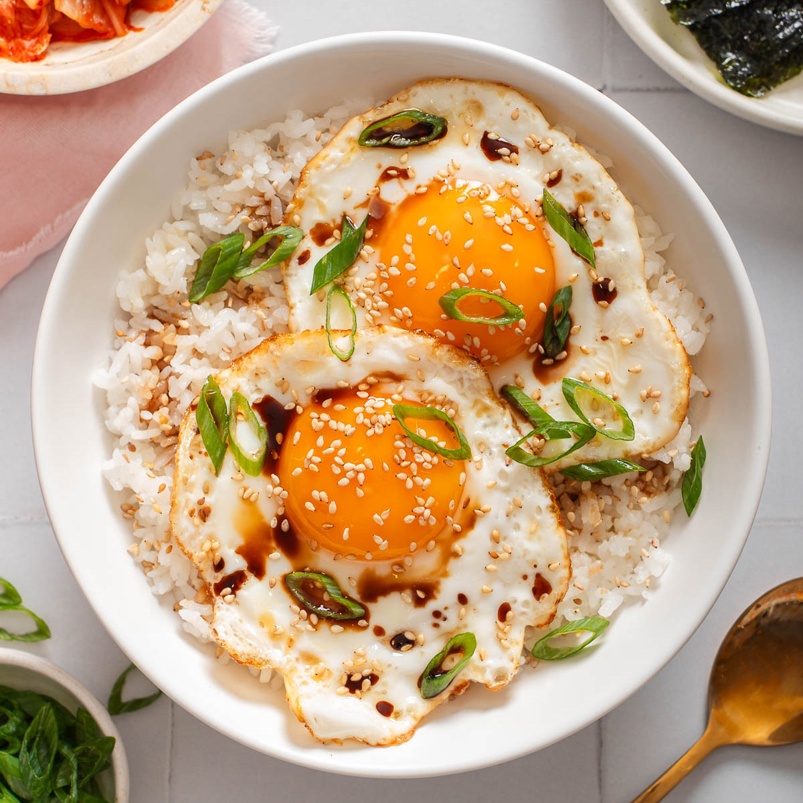

Gyeran Bap is a simple and comforting Korean dish made of warm rice topped with a fried egg, soy sauce, sesame oil, and often roasted seaweed or green onions. It’s quick to make, flavorful, and often enjoyed as an easy breakfast or light meal.
Fry your eggs. Heat 1 tablespoon of oil on a small non-stick skillet over medium heat. Crack 2 eggs into the skillet and cook until desired doneness. Drizzle extra oil along the edges of the egg whites for extra crisp.
Prepare the gyeran bap. In a small bowl, add the cooked rice and butter. Then place the eggs on top and season with soy sauce and sesame oil. Then garnish with green onion, and sesame seeds.
Serve. Break the egg yolk and mix the egg with the rice until combined and enjoy!